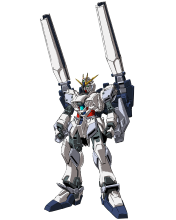
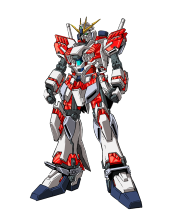
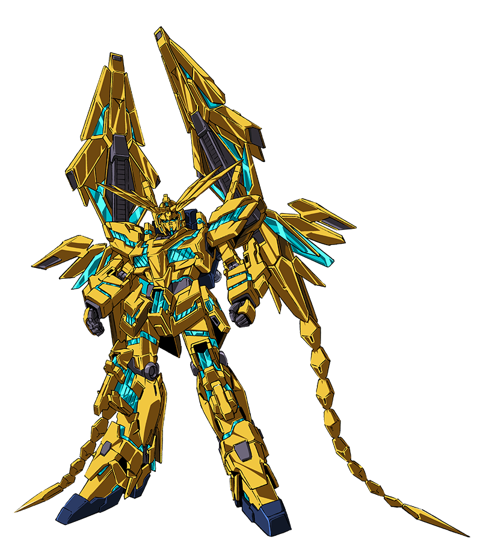
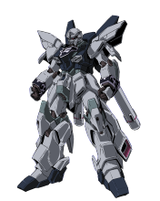
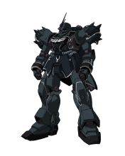
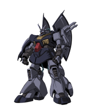
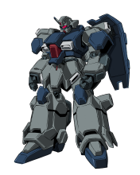
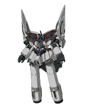
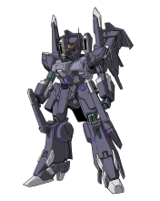

NT高达（ナラティブガンダム） 亦译作“NARRATIVE高达”、“叙述高达”。 由亚纳海姆电子公司制造，主角乔纳·巴修塔所乘搭的机动战士。 是RX-93 ν2高达的魔改版，精神感应框架特别强化的机体，测试机。 特征是没有装上各部份的装甲，露出机体的内部框架。 因为是测试机，所以素体的武装就只有头部火神炮。 因此在执行“狩猎不死鸟”作战要借助卢欧商会的力量，借着换上多种武装来运用。

NT高达 A装备 NT高达安装高机动用装备的式样。强化的主要着眼点在腿部周遭，借助全部转向后方的大型辅助器可得到爆炸性的加速度。此外，还有为了狩猎菲尼克斯所使用的复合特殊兵器“精神力狩猎器”，参与了“不死鸟狩猎”作战的战线。高能米加粒子炮。

NT高达B装备 NT高达背部装备了搭载有线式远程攻击终端2机的背包后的姿态。远程攻击终端和背包由电缆连接，使用有线控制来操作。双臂装备着内置导弹的小型盾牌。

NT高达C装备 在SIDE6学园都市殖民卫星·墨提斯内的战斗结束后，为引诱出“凤凰”将卢欧商会收集到的精神感应框架进行二次加强安装后的NT高达的姿态。将RX-0系列的精神感应框架最低限度地组装的应急性加强式样机体，将精神感应框架作为外装加强使用。不存在于原本的装备方案中的武装设备，为了方便起见而称之为C装备。

独角兽高达3号机凤凰（ユニコーンガンダム3号机フェネクス） 率先采用试验性质的全精神感应框架为素体，以白色1号机和黑色2号机的建造数据组装而成的金色独角兽高达3号机。 于U.C.0095时发生了失控事件，随后下落不明。

杰斯塔 杰札尔队式样（ジェスタ シェザール队仕様） 阿纳海姆电子公司开发的特殊战用MS。在“狩猎不死鸟”作战中由杰札尔队使用，全机的头部配备有Scope型的传感器强化单元。此外根据作战的需要，将背包换装成高机动型的A班、在米加光束步枪上组合了狙击装备的B班、在89式喷射座的基础上携带捕获用的捕捉枪的C班，每班各2架共计6架的小队进行"不死鸟狩猎"的挑战。

新安州·原石（シナンジュ?スタイン） “UC计划”中为测试精神感应框架的强度、契合性而开发的试作MS，开发代号为Stein 01。据说是于U.C.0094时，在由地球联邦宇宙军所属的克拉普级巡洋舰云海运送的途中遭到抢夺。

基拉·祖鲁（埃里克机） ギラ?ズール（エリク机） 装备了基拉·祖鲁[重装规格]的背包和新的近战武器的机体。装备为光束薙刀和比一般机的光束机枪更短的近战式光束机枪。头部因为安装有指挥官机天线而外观有所改变。

迪杰（ディジェ） 以利克·迪亚斯为基础修改的试作陆战用MS。与U.C.0087时的大的变更点为主武器的光束步枪形状被变更为杰刚和里歇尔的使用的共通规格。而且，只有队长机在左肩装备有探照灯。属于卢欧商会使用。是乔纳的搭乘机。

古斯塔夫·卡尔（グスタフ?カール） 作为联邦军的次世代而进行开发的量产型通用MS。与RGM-89 杰刚属于不同体系开发的机体，装甲也变为了厚实的重装型。作为玛莎的护卫被配备，使用和杰刚D型 护卫队式样相同的新型90mm机枪。

新吉翁II号（II（セカンド）ネオ?ジオング） 新吉翁号是作为弗尔·伏朗托的专用机而开发的，新吉翁恩II号使用了其预备配件组装而成。为了提高刚性在肩部武器舱新追加了框架，武器舱盖则被拆除。新增的被涂上红色的框架是该机体的特征。武装方面手腕追加了有线式控制机能，能够实现和吉翁号一样的操作。

银弹·镇压者（シルヴァ?バレト?サプレッサー） 墨瓦腊泥加内一直保管着的银弹，利用其高扩展性作为测试机的而修复的机体。以光束麦林枪的使用为主要目的，将腕部和背包替换，而且头部和脚部的样式变更也在测试中。